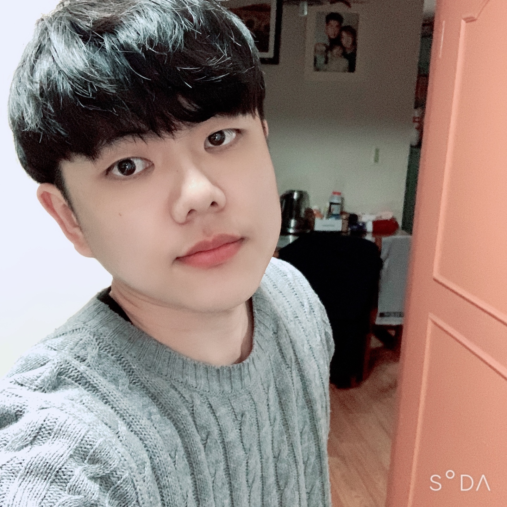

ABOUT
"안녕하세요! 전기 기술자에서 프론트엔드 개발자로 전향을 꿈꾸는 주철진입니다.""
저는 평소 사회에 좋은 영향을 주는 사람이고 싶었습니다. 다양한 활동들을
하면서 지냈지만 한계가 많았고 전기 기술자로서 일을 하게 됐습니다.
선택을 후회하지는 않았지만 반복되는 일상에 보람을 느끼기 힘들었습니다.
저에게는 칼퇴, 안정적인 월급이 전부가 아니었기 때문입니다. 그러다 웹
프로그래밍에 대해서 흥미를 가지게 됐습니다.
개발은 무궁무진한 가능성으로 사회에 좋은 영향을 줄 수 있는 강력한
길이라는 생각이 들었기 때문입니다.
개발자는 끊임 없이 공부하며 발전해나가는 사람이라고 생각합니다.
그렇기에 개발자로서 성장하며 사회에 좋은 영향을 줄 수 있는 사람이 되고
싶습니다.
TECH SKILLS
HTML5
정적인 웹 페이지를 만들 수 있습니다.
웹 표준에 관심이 많습니다.
Semantic 하게 작성할 수 있습니다.
CSS3
BEM 방법론을 적용할 수 있습니다.
Keyframes를 활용한 애니메이션 기법을 활용할 수 있습니다.
반응형 웹을 제작할 수 있습니다.
JavaScript
ES6 + 문법을 사용할 수 있습니다.
간단한 게임을 제작할 수 있습니다.
동적인 페이지를 구성할 수 있습니다.
What I Love
영화 & 드라마 감상
메세지를 담은 영화나 드라마를 보는 것을 좋아합니다. 생각을 곁들여 감상을 끝낸 후에 오는 여운이 짜릿해요.
커피와 여유
저에게 커피는 생명수입니다. 산미가 적은 원두를 선호하고 커피와 함께 여유를 즐기는 것을 좋아해요. 맛있는 원두 추천은 항상 좋습니다.
맛있는 음식
맛있는 음식을 먹으러 다니는 것을 좋아해요. 여행도 좋아하는데 그 이유의 대부분일만큼? 특히, 좋아하는 사람들과 먹는 음식은 큰 행복을 준다고 생각합니다.